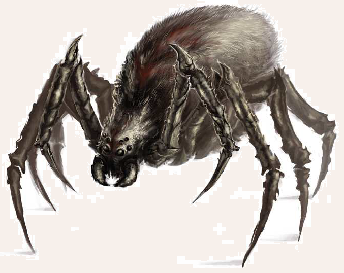

Der sieben bis acht Spann lange Körper der Höhlenspinne ist schon ohne die acht mächtigen und borstig behaarten Beine imposant genug, um den meisten Menschen einen gehörigen Schauer über den Rücken laufen zu lassen. Doch die von Geifer triefenden Beißwerkzeuge und das schwarze Fell der Männchen oder das braune der Weibchen, in dem gelegentlich eine rotbraune, kreuzförmige Rückenzeichnung erkennbar ist, komplettieren das Bild einer Bestie aus iebrigen Angsträumen. Über die Herkunft dieser riesenhaften Spinnentiere ist wenig bekannt. So wird einerseits behauptet, es handle sich um die Folge eines fehlgeschlagenen Experimentes während der Dunklen Zeiten, während andere vermuten, man habe es mit degenerierten Nachkommen einer angeblichen Spinnenzivilisation zu tun. Nicht ganz unwahrscheinlich ist jedoch, dass es sich schlichtweg um sehr, sehr große Spinnen handelt, deren Abkunft nichts Widernatürliches innewohnt.
Verbreitung
Die Höhlenspinne ist vergleichsweise selten und ihrem Namen nach vor allem in Höhlen, Grotten und Felsspalten, aber auch in Ruinen und dunklen Wäldern beheimatet.
Die Umgebung ihres Nestes ist oftmals an großen Spinnennetzen zu erkennen.
Da sie jedoch zur Jagd bisweilen durch ihr oft weitläuiges Territorium wandert, kann man auch ganz unversehens auf sie stoßen.
In Südaventurien kann man zudem auf ihre engen Verwandten, die Baumspinnen stoßen, die im Gegensatz zu den Höhlenspinnen keine Netze, sondern klebrige Fallstricke zwischen Bäumen und Felsen spannen.
Besonders selten ist zudem die Nebelspinne, die in den feuchtheißen Nebelwäldern auf der Südmeerinsel Altoum zu inden ist.
Man sagt diesen Spinnen nach, dass sie eine fast menschliche Intelligenz besitzen, mit der sie Fallen und Hinterhalte vorbereiten.
Zu guter Letzt sei als weitere direkte Verwandte der Höhlenspinne die Hakenspinne genannt, die ihre Nester im Djurkaram-Massiv baut.
Wer sich in die Höhlensysteme dieses Bergmassivs mitten in der Wüste Khôm wagt, wird oftmals von dem Angriff dieser Spinnen überrascht, da sie aufgrund ihres mit feinen Widerhaken überzogenen Pelzes in der Lage sind, sich an den Wänden und Decken der Höhlen festzuklammern und in einem Sprung auf ihre Beute niederzu stürzen. Es gibt zudem seit einiger Zeit Geschichten aus recht unglaubwürdiger Quelle, man habe im Svellttal kleinere Exemplare von Höhlenspinnen gesehen, die Kristalle auf ihren Hinterleibern getragen haben sollen.
Lebensweise
Um Höhlenspinnen zu inden, braucht man nur an ihren Netzen zu ziehen, da sie meist verborgen an den Rändern ihrer Netze ausharren und auf Beute warten.
Ist ihr Warten erfolglos, gehen sie auch aktiv auf Jagd.
Manche Höhlenspinnen sind schlau genug, ihre Beute aufzuspüren und so in Angst und Schrecken zu versetzen, dass sie Hals über Kopf in die vorbereiteten Netze laufen.
Einmal in den mit einer ausgesprochen klebrigen Flüssigkeit überzogenen Fäden der Netze gefangen, ist es fast aussichtslos, sich aus ihnen wieder zu befreien.
Das Gewebe ist so robust, dass selbst Hirsche und junge Auerochsen schon in ihrem Gespinst gefunden wurden.
Sitzt die Beute erst einmal fest, versetzt die Spinne ihrem Opfer einen Biss, der es dank eines aus mehreren Drüsen stammenden Giftes lähmt.
Währenddessen wird die Beute bereits eingesponnen und zur Vorratshaltung in das Nest der Spinne gezogen.
Dort wird das Opfer durch in den Kokon gespritzte Verdauungssäfte langsam bei lebendigem Leibe zersetzt und dann von der Spinne gefressen.
Zwar leben Höhlenspinnen meist alleine, doch sammeln sich in manchen Fällen mehrere, manchmal dutzende Höhlenspinnen in einem großen Nest und können so auch für erfahrene Kämpfer eine erhebliche Gefahr darstellen. Da die Spinnen keinerlei Interesse an Besitz oder Wertgegenständen haben, inden sich in manchen Nestern, die oftmals diverse Generationen lang bewohnt werden, die Besitztümer all derer, die Beute der Achtbeiner geworden sind.
Aus gelegentlichen Paarungen gehen Dutzende bis Hunderte von Eiern hervor, die in der Nähe des Nestes in hohlen Bäumen oder kleinen Felsspalten versteckt werden.
Allerdings überleben von den auf sich allein gestellten Jungtieren meist nur wenige.
Einzig die Baumspinne betreibt eine Art Jungtieraufzucht.
Die Jungspinnen klammern sich dabei an den Körper des Weibchens, wobei es durchaus vorkommen kann, dass sie sogar ihre Mutter auffressen.
In manchen Regionen Maraskans und bei den Goblins gelten die Eier der Höhlenspinne als Delikatesse.
Schon so mancher junge Goblin fand sich bei dem Versuch, als Beweis seines Mutes ein solches Ei zu stehlen, in einem Kokon wieder.
Hölenspinne
Größe: 0,30 bis 0,50 Schritt hoch; 1,40 bis 1,60 Schritt lang
Gewicht: 30 bis 40 Stein
Eigenschaften:
MU 11
KL 09
IN 14
CH 08
FF 12
GE 15
KO 12
KK 14
LeP: 22
AsP: -
KaP: -
INI: 13+2W6
SK: 2
ZK: 0
GS: 7
VW: 5
Biss:
AT: 14
TP: 1W6+2 (+Gift)
RW: kurz
RS/BE: 2/0
Aktionen: 1
Vor- und Nachteile: Dunkelsicht I Herausragender Sinn (Tastsinn)
Sonderfertigkeiten: keine
Talente:
Klettern 14 (11/15/14),
Körperbeherrschung 12 (15/15/12),
Kraftakt 7 (12/14/14),
Schwimmen 2 (15/12/14),
Selbstbeherrschung 10 (11/11/12),
Sinnesschärfe 12 (9/14/14),
Verbergen 14 (11/14/15),
Einschüchtern 7 (11/14/8),
Willenskraft 5 (11/14/8)
Anzahl: 1 oder 1W3+2 (Spinnennest)
Größenkategorie: mittel
Typus: Tier, nicht humanoid
Kampfverhalten: Höhlenspinnen warten, bis etwas ihr Netz berührt, dann greifen sie ihr Opfer an und verfolgen es auch, bis es sich zu weit von ihrem Nest entfernt hat (etwa 50 Schritt). Gelegentlich gehen Höhlenspinnen außerhalb ihres Reviers auf Beutejagd. Wesen bis zur Größe eines Menschen werden als Beute betrachtet.
Flucht: Verlust von 50% der Lebenspunkte
Erfahren: KO 26 statt 25, KK 27 statt 26; LeP 125; Waffenlos AT 14 / PA 12 / TP 2W6+7, Troll-Axt: AT 14 / PA 9 / TP 3W6+13; Kraftakt 14 statt 12, Verbergen 4 statt 2, Einschüchtern 10 statt 8, Menschenkenntnis 5 statt 3, Willenskraft 5 statt 3
Kompetent: KO 27 statt 25, KK 28 statt 26; LeP 125; Waffenlos AT 15 / PA 12 / TP 2W6+8, Troll-Axt: AT 14 / PA 9 / TP 3W6+14; Kraftakt 16 statt 12, Verbergen 5 statt 2, Einschüchtern 12 statt 8, Menschenkenntnis 6 statt 3, Willenskraft 6 statt 3
Beute: 25 Rationen Innereien (ungenießbar), Gift (75 Silbertaler)
Sonderregeln: Netz: Helden können sich im Netz der Spinne verfangen. Um das Netz zu entdecken, ist eine Probe auf Sinnesschärfe (Wahrnehmen) erschwert um 1 erforderlich. Bei Gelingen wird das Netz rechtzeitig entdeckt. Bei Misslingen verfängt sich der Held darin. Er erhält den Status Fixiert. Um sich aus dem Netz zu befreien, muss eine Sammelprobe auf Körperbeherrschung (Entwinden) gelingen (es müssen 10 QS angesammelt werden, Zeitintervall 1 Kampfrunde, 7 erlaubte Proben, danach ist der Held entweder frei oder schafft es nicht mehr aus eigener Kraft).
| LeP-Verlust | Schmerz | |
|---|---|---|
| 17 LeP (¾) | +1 Schmerz | |
| 11 LeP (½) | +1 Schmerz | |
| 6 LeP (¼) | +1 Schmerz | |
| 5 LeP und weniger | +1 Schmerz |
| Tierkunde | (Ungeheuer oder Wildtiere) | |
|---|---|---|
| QS1 | Wissen über das Gift der Höhlenspinne. | |
| QS2 | Wissen über die Größe des Reviers (50 Schritt). | |
| QS3 | Egelschreck mag die Höhlenspinne nicht. Sie erleidet einen Abzug von 2 Punkten auf AT, wenn sie es mit einem Gegner zu tun hat, der sich mit Egelschrecksalbe beschmiert hat. |